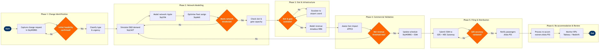

Schedule Change Management
Network Planning & Scheduling › Schedule Planning · 19 L4 steps · 6 phases · 5 decision gates · Updated 2026-03-18 17:47
📊
Process Flow Diagram (BPMN)

📋
L4 Process Steps
| Step | Step Name | Role / Swim Lane | System | Input | Output | KPI | Dec? | Exc? |
|---|---|---|---|---|---|---|---|---|
Phase 1 1.1 |
Capture schedule change request in SkyWORKS | Schedule Planning Analyst | Amadeus SkyWORKS | Change trigger: demand signal, slot relinquishment, aircraft swap, regulatory requirement, or commercial request | Change request record with originating source, affected flights, and proposed effective date | Request logged within 2 hours of trigger receipt | N | N |
| 1.2 | Classify change type, scope, and urgency | Schedule Planning Manager | Amadeus SkyWORKS | Change request record | Classification: seasonal adjustment, IRROP-driven, equipment swap, slot relinquishment, or capacity change; urgency tier (P1/P2/P3) | Classification completed within 4 hours of request capture | N | N |
| 1.3 | Confirm route licence and fleet authority | Schedule Planning Analyst | Amadeus SkyWORKS | Change classification, proposed route/frequency | Go/No-Go on initial feasibility: route DOT-licensed, aircraft type authorised for airport pair, bilateral traffic rights confirmed | Feasibility gate cleared within 1 business day; 100% of changes with regulatory exposure escalated before modelling | Y | Y |
Phase 2 2.1 |
Simulate O&D demand for proposed schedule | Demand Forecasting Analyst | Amadeus SkyCAST | Proposed flight itinerary changes, historical booking curves, competitive schedule data from OAG Schedule Analyser | Projected O&D demand, expected load factor, and unconstrained demand estimate for affected markets | Forecast MAPE ≤8% on 90-day horizon; load factor projection ≥83% for change to proceed | N | N |
| 2.2 | Model network-wide ripple effects in SkySYM | Network Simulation Analyst | Amadeus SkySYM | Proposed schedule delta, current published schedule, connecting flow data | Connecting passenger impact report, minimum connect time (MCT) violations, spill/recapture estimates for disrupted flows | Zero MCT violations in output schedule; connecting flow spill ≤2% of total affected O&D | N | N |
| 2.3 | Run fleet assignment optimisation to resolve conflicts | Fleet Assignment Analyst | Amadeus SkyMAX | Network simulation output, available fleet positions, maintenance reservation blocks | Revised fleet assignment plan resolving aircraft-type conflicts; identified tail-swap or substitution options | Fleet conflict resolution rate ≥95% within 24 hours; gauge utilisation variance ≤5% vs. baseline plan | N | Y |
| 2.4 | Gate: validate change against network thresholds | Schedule Planning Manager | Amadeus SkySYM | Demand simulation, ripple effect report, fleet assignment plan | Approval to proceed to slot/infrastructure assessment, or rejection with required redesign | Gate review completed within 1 business day; ≥90% of changes pass gate on first submission | Y | N |
Phase 3 3.1 |
Check slot availability and filing deadlines | Slot Coordination Specialist | IATA CRS (Coordinated Reservation System) | Proposed departure/arrival times, airport coordination level (L1/L2/L3), current season's slot holdings | Slot availability confirmation or conflict flag; applicable SCR/ACR filing deadline | 100% of slot change requests filed before IATA deadline; slot return compliance rate ≥98% | N | N |
| 3.2 | Validate gate and terminal capacity at affected airports | Airport Operations Coordinator | SITA Airport Management System (AMS) | Proposed schedule change, airport gate inventory, aircraft type (narrowbody vs. widebody) | Gate assignment confirmation or conflict flag; ground time adequacy assessment | Gate conflict resolution within 48 hours of identification; turnaround time ≥25 min protected for all affected rotations | N | Y |
| 3.3 | Gate: confirm slot and infrastructure availability | Schedule Planning Manager | IATA CRS (Coordinated Reservation System) | Slot confirmation or conflict report, gate capacity assessment | Infrastructure green-light or escalation to airport/slot coordinator for resolution | Slot and gate confirmation within 5 business days of change initiation; escalation resolved within 10 business days | Y | Y |
Phase 4 4.1 |
Model revenue and displacement impact in Amadeus NRM | Revenue Management Analyst | Amadeus Revenue Management (NRM) | Approved schedule delta, current booking state for affected flights, O&D demand forecasts | Revenue impact projection: incremental revenue, displacement cost, net contribution vs. status quo | Net revenue impact calculated within 2 business days; minimum threshold: net contribution change ≥ -$25K per changed rotation | N | N |
| 4.2 | Assess fare structure and pricing impact via ATPCO | Pricing Analyst | ATPCO | Revenue impact projection, current fare rules for affected markets, competitive pricing benchmarks | Fare rule amendment requirements; identification of fares requiring re-filing if schedule change breaches permitted connections or routing rules | 100% of fares requiring re-filing identified before SSIM submission; fare amendment cycle ≤48 hours | N | Y |
| 4.3 | Gate: commercial approval of net revenue impact | VP Network Planning | Amadeus Revenue Management (NRM) | Revenue impact projection, fare amendment requirements, infrastructure cost estimates | Executive approval to proceed to filing, or directive to redesign change to improve commercial outcome | Commercial gate decision within 2 business days; ≤15% of changes recycled at this gate | Y | N |
Phase 5 5.1 |
Update master schedule and generate SSIM file | Schedule Planning Analyst | Amadeus SkyWORKS | Approved schedule change, fleet assignment plan, effective date range | Updated published schedule in SkyWORKS; SSIM Chapter 7 message file for distribution | SSIM generated within 4 hours of commercial approval; zero data integrity errors in SSIM validation report | N | N |
| 5.2 | Submit SSIM to GDS channels and NDC API Gateway | Distribution Operations Analyst | Sabre GDS | SSIM Chapter 7 file, NDC schedule change notification payload | Schedule update acknowledgement from Sabre GDS, Travelport GDS, Amadeus GDS, and NDC API Gateway; error report for failed segments | GDS schedule propagation within 24 hours of SSIM submission; NDC channel update within 4 hours; zero unacknowledged submissions | N | Y |
| 5.3 | Gate: validate schedule accuracy across all channels | Distribution Operations Analyst | OAG Schedule Analyser | Live GDS schedule data, published SkyWORKS schedule, NDC content feed | Channel accuracy report; confirmed schedule match or list of discrepancies requiring re-submission | Schedule accuracy ≥99.5% across all channels within 48 hours of submission; zero flight-level discrepancies in departure time or equipment type | Y | N |
Phase 6 6.1 |
Trigger involuntary change notifications via Altéa PSS | Customer Experience Operations Specialist | Amadeus Altéa PSS | Confirmed schedule change, affected PNR list, change type (significant vs. minor per DOT thresholds) | Passenger notification emails/SMS sent; re-accommodation offers generated for significantly affected itineraries (>90 min departure change) | 100% of affected passengers notified within 24 hours of schedule change publication; DOT significant change threshold compliance rate 100% | N | Y |
| 6.2 | Process re-accommodation requests and fee waivers | Customer Experience Operations Specialist | Amadeus Altéa PSS | Passenger rebooking requests, waiver policy (significant change = full flexibility), alternative flight inventory | Rebooked PNRs; refund transactions for passengers who opt out; waiver codes applied | Re-accommodation rate ≥92% on same-day alternatives; average re-booking handle time ≤8 minutes; refund processing within DOT 7-day credit card window | N | Y |
| 6.3 | Monitor post-implementation KPIs and close change record | Schedule Planning Analyst | Tableau / AWS Redshift | Live booking data (Altéa), load factor actuals, OTP data, re-accommodation completion rate | Post-implementation review report; change record closed in SkyWORKS with outcome classification (successful / modified / reversed) | Load factor on changed flights ≥83% within 30 days; OTP ≥78% D0; re-accommodation completion rate ≥98% within 72 hours of notification | N | N |
📋